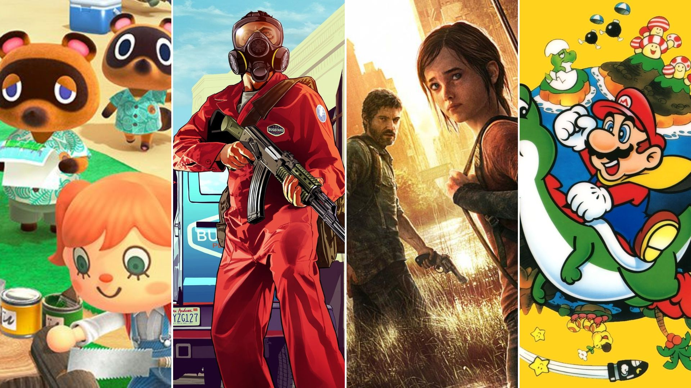

Objetivo da página
Esta página é destinada para exposição de minha opinião pessoal, a qual refere-se em quais são os 5 melhores jogos para vídeo-game e computador que já foram desenvolvidos até o momento.
Meu Top 5
- GTA San Andreas
- GTA V
- Forza Horizon
- Minecraft
- PES 2018 (Pro Evolution Soccer 2018)
Critérios utilizados para listagem dos jogos
A fundamentação que utilizei para listar tais jogos consistem nos seguintes Critérios:
-
Jogabilidade
Todos os itens citados foram jogados por mim e, com certeza, para eleger os mesmos como melhores, não considerei qualquer coisa. Em minha concepção, quando falamos de games, para que um título seja considerado excelente, a jogablidade é o ponto crucial. tem de ser algo fluido, intuitivo, uma experiência única, que apenas aquele título possa oferecer. Foi isso que senti quando joguei cada um desses
-
Revolução
Todos os títulos, sem excessão, foram revolucionários para a indústria dos games. Acho que nem preciso me esforçar para explicar o porque títulos como GTA San Andreas, GTA V ou até mesmo minecraft reviraram o mundo gamer né?
-
Gráficos
Muitos destes título, com destaque especial para o pódio (GTA San Andreas, GTA V e Forza Horizon), possuem gráficos que, não só para sua época, mas até os dias de hoje, são muito bonitos e agradáveis aos olhos de quem está jogando
-
Popularidade
Todos os jogos, sem excessão, marcaram épocas, e são muito populares até os dias de hoje. É a popularidade, a opinião do público em si, que define o sucesso de um game.
-
Nostalgia
Claro que considerei crtérios técnicos, mas é inevitável considerar meus sentimentos pessoais perante estes títulos. É algo que marcou não só a minha infância, mas a de milhões de gamers pelo mundo todo. Não tinha coisa melhor do que você chegar em casa, depois de uma manhã "cansativa" do colégio, ligar seu vídeo-game, e se divertir. O passado não volta, mas se faz presente em nossas mentes...
Considerações finais e recomendações
É perceptível que não sou nenhum especialista em games, apenas me divirto com eles. Afinal de contas, é para isso que eles são feitos. Porém, para oferecer uma visão mais ampla sobre cada um dos títulos, irei deixar recomendações de sites que irão fornecer informações detalhadas sobre os mesmos
Sites
- GTA San Andreas:
- GTA V
- Forza Horizon
- Minecraft
Todas as informações necessárias do jogo estão aqui: Minecraft wiki Brasil
- PES 2018 (Pro Evolution Soccer 2018)